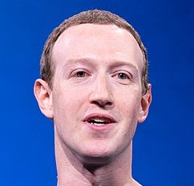

Марк Эллиот Цукерберг / z ʌ k ər b ɜr / ; родился 14 мая 1984 г. — американский медиа-магнат , интернет-предприниматель и филантроп
. Он известен как соучредитель веб-сайта социальной сети Facebook и его материнской компании Meta Platforms ранее Facebook, Inc, в которой
он является председателем, главным исполнительным директором и держателем контрольного пакета акций.
Цукерберг учился в Гарвардском университете , где в феврале 2004 года запустил Facebook вместе со своими соседями по комнате Эдуардо Саверином , Эндрю Макколлумом ,
Дастином Московицем и Крисом Хьюзом . Первоначально
запущенный для избранных кампусов колледжей, сайт быстро расширился и в конечном br итоге вышел за пределы колледжей, достигнув к 2012 году одного миллиарда пользователей
